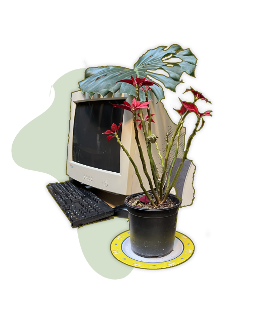

Wij zoeken personeel
Wij bieden mogelijkheden voor werk, stages en vrijwilligerswerk.
Maatschappelijk assistent
KLIK HIERAdministratief medewerker
KLIK HIERKookvrijwilliger
KLIK HIERLogistiek vrijwilliger
KLIK HIER
Gelieve uw sollicitatiebrief en cv te verzenden naar:
vzw Huis van Vrede
Tav Marie-Alice Janssens, coördinator
coordinatie@huisvanvrede.be
Meer informatie: 0493/51.32.03
